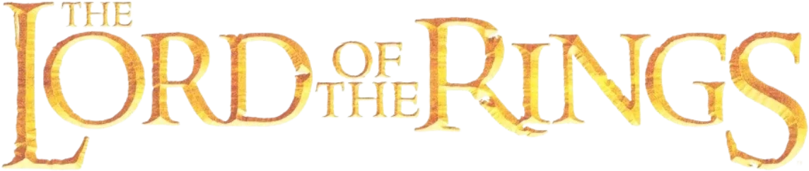

Wees op tijd
Deur open om 08:00 voor First & Second Breakfast. Om 08:30 gaat het licht uit — dan wachten we op niemand meer.
Zaterdag 24 oktober 2026

Extended Edition MarathonEén dag. Drie films. Zeven maaltijden.
Negen wandelaars, en een bank.
Alle drie de films in de lange versie, in zes delen, met pauzes en maaltijden zoals het een hobbit betaamt. Deur open om 08:00. Om 08:30 gaat het licht uit — en dan wachten we op niemand meer.
24 oktober 2026 · 08:30 · Nederlandse tijd
De klok wordt opgewonden…
Deur open om 08:00 voor First & Second Breakfast. Om 08:30 gaat het licht uit — dan wachten we op niemand meer.
Een kussen, een dekentje, warme sokken. Je zit hier ruim veertien uur. Dit is geen filmavond, dit is een expeditie.
Zeven maaltijden, van First Breakfast tot Supper. Meld allergieën en dieetwensen ruim van tevoren — Sam plant graag vooruit.
Telefoons in de Zak van Bilbo. Geen spoilers voor wie het nog niet kent (die bestaan echt). En niemand zegt “dit is toch niet in het boek”.
Uiteraard. Alle drie de films in de lange versie, in zes delen met pauzes ertussen. De pauzes zijn geen suggestie.
Download de hele dag als agenda-bestand, inclusief alle pauzes en maaltijden.
Zeven maaltijden, zoals het een hobbit betaamt. En toevallig ook drie films.
Tik op een filmblok om te zien welk stuk Midden-aarde je op dat moment doorkruist.
Negen wandelaars, tegenover negen Ringgeesten. Kies er één en volg hem op de kaart.
Kies een reisgezel — of een filmdeel — en de route tekent zichzelf.
Tik op een plaats voor meer.
Gondor roept om hulp. Steek het eerste baken aan.
Kijk erin. Op eigen risico.
…
…